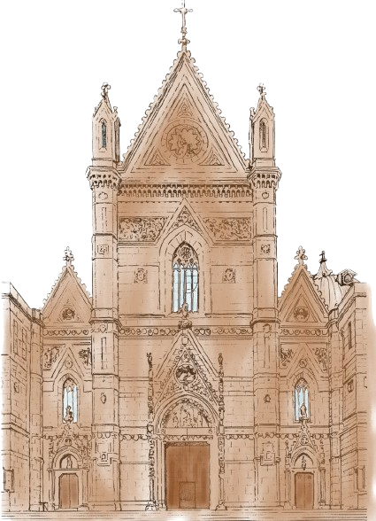

Informazioni utili per raggiungere il matrimonio
Non vogliamo per niente al mondo che ti perda il giorno delle nozze! Qui puoi consultare gli indirizzi della cerimonia e del ricevimento.

CHIESA
Cattedrale Metropolitana di Santa Maria Assunta
Via Duomo, 147, 80138 Napoli NA

LOCATION
Il Casale di Bosco De' Medici
Via Antonio Segni, 41, 80045 Pompei NA